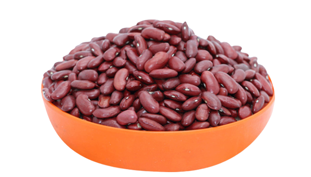
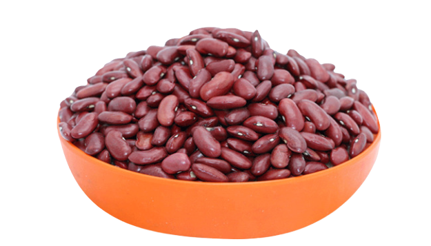

The Bean Emporium
the place for beans


I have been a bean man for years, in my heart of heart maybe forever. As a child it was baked beans (on toast/with a fry up). If beans were on the menu, Nic was at the table. At Uni i developed a strong dependence on jacket potatoes with cheese and beans for general survival. However as I have grown older, my love for beans has developed into a more refined appreciation as my discovery of Mexican food developed my love and knowledge of beans also developed alongside. In this page you will find out how this has affected my life, and hopefully find how it can affect your own
The following infomation should serve as an introduction to bean enlightenment. Hopefully shedding light on the the great world of beans, while dispelling some of the most widespread bean misinformation we see perpetuated in society today.
The kidney bean is possibly the most common of all beans. It is robust, versatile and kinda yucky on its own. However you combine this lumb of protein with a little love and care... and wow, you've unlocked a whole new world of devine flavour. Not only that but it can be used to add body to a dish, the neccesary oomph to make a meal truly fulfilling. The versatility of this lil beany boy means that you have almost infinite options as to preperation techniques or flavour parings.
This is a cashew nut... which while looking like a very dry bean, is in fact not a bean at all. It is actually a nut. Not many people know this which has caused an endless amount of domestic arguments as one member of the family may attempt to put cashews into the three bean salad being prepared for dinner. Only to be rightfully repremanded for their fooolish actions.
If you need a bean buddy give me a shout and we can talk beans.
CONTACT ME© 2020 Nic Allen.